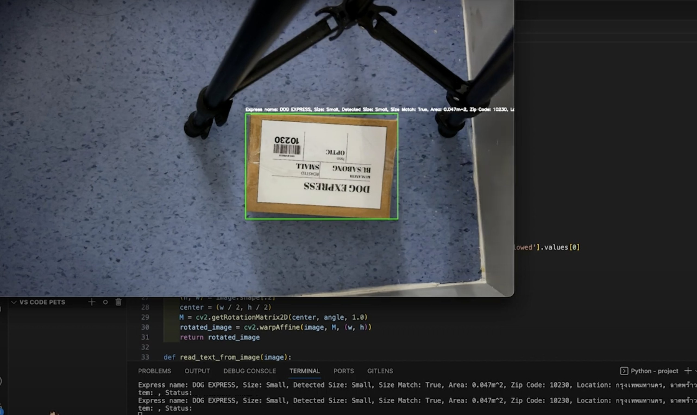
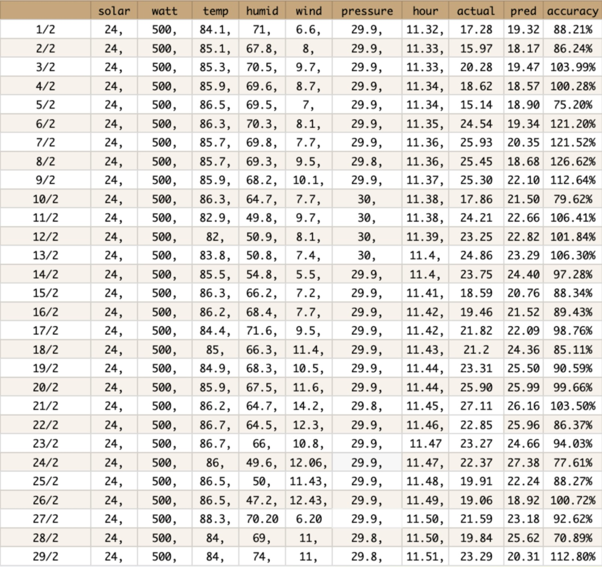
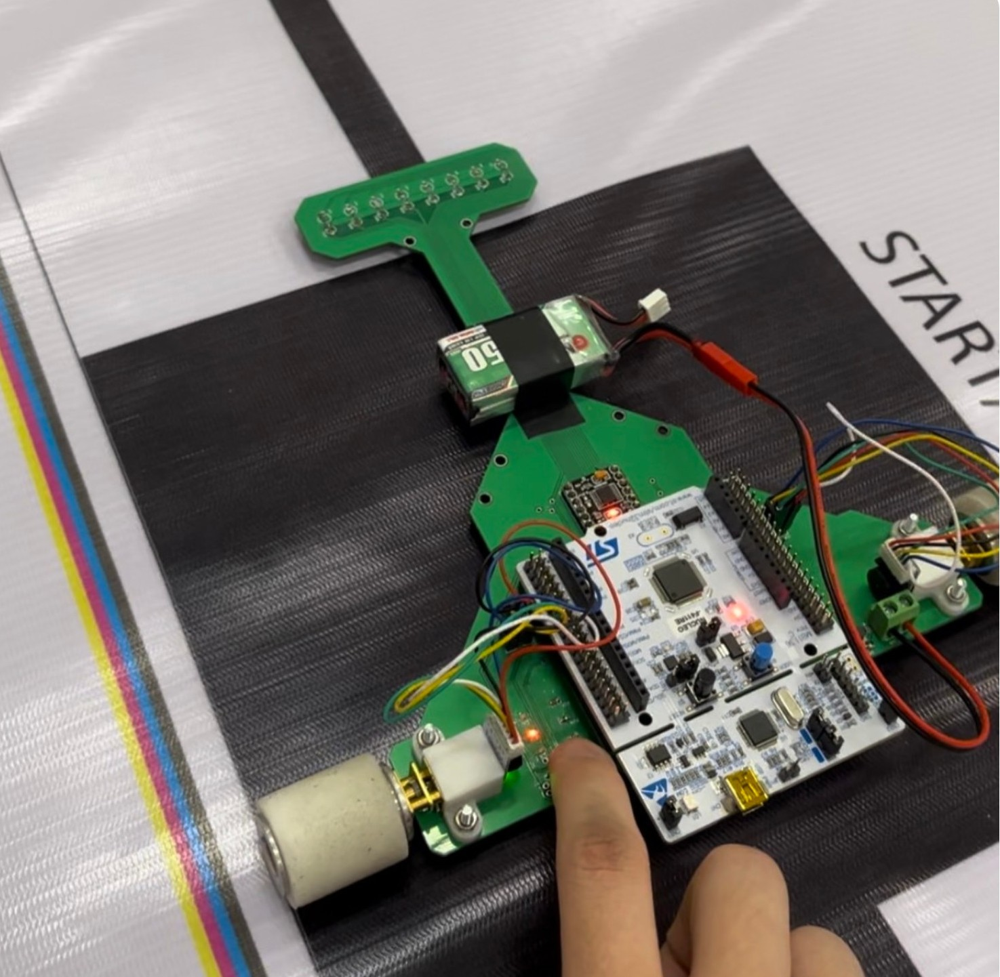
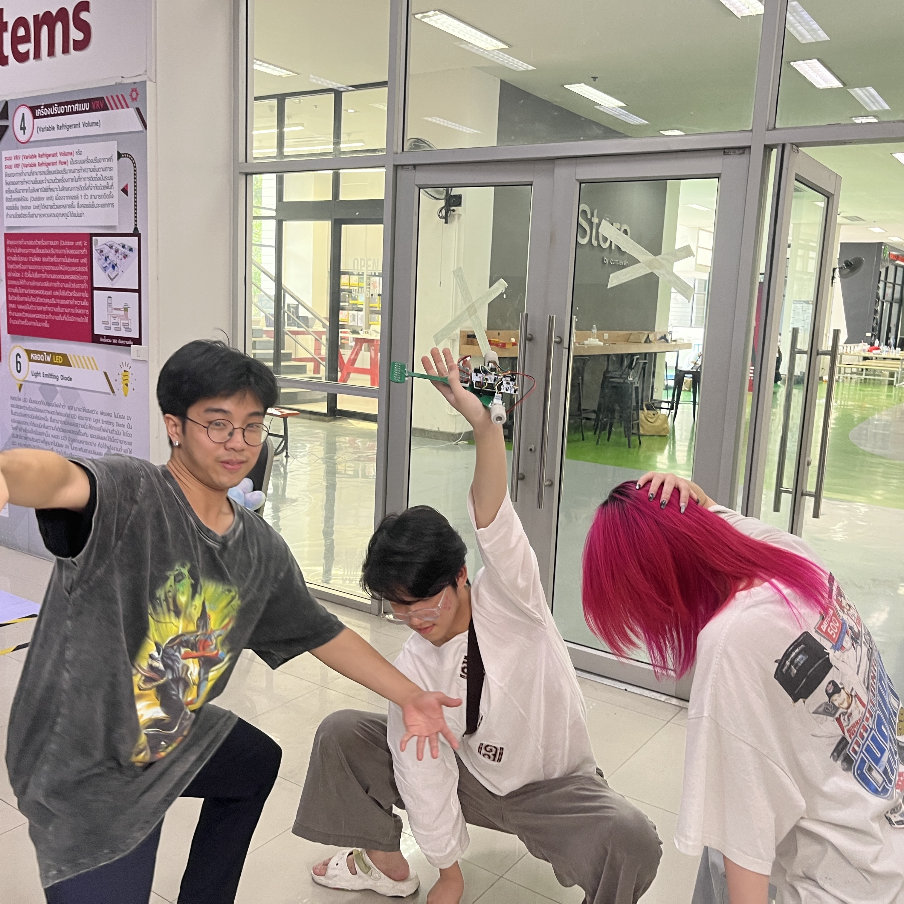
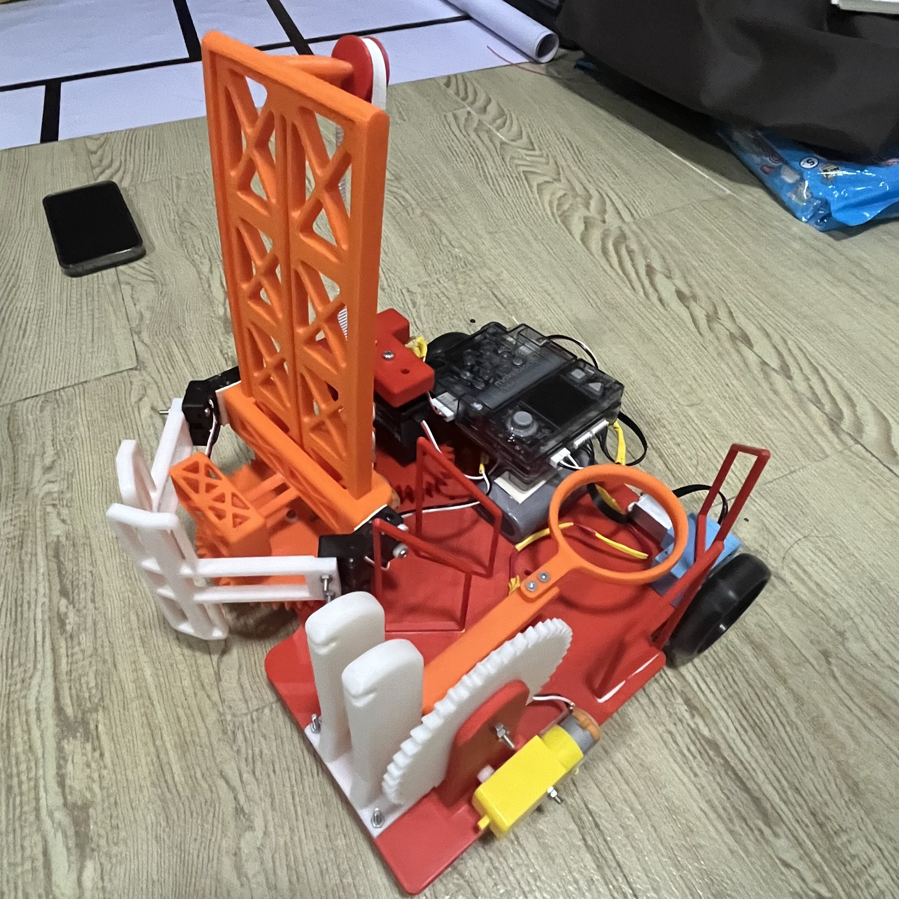
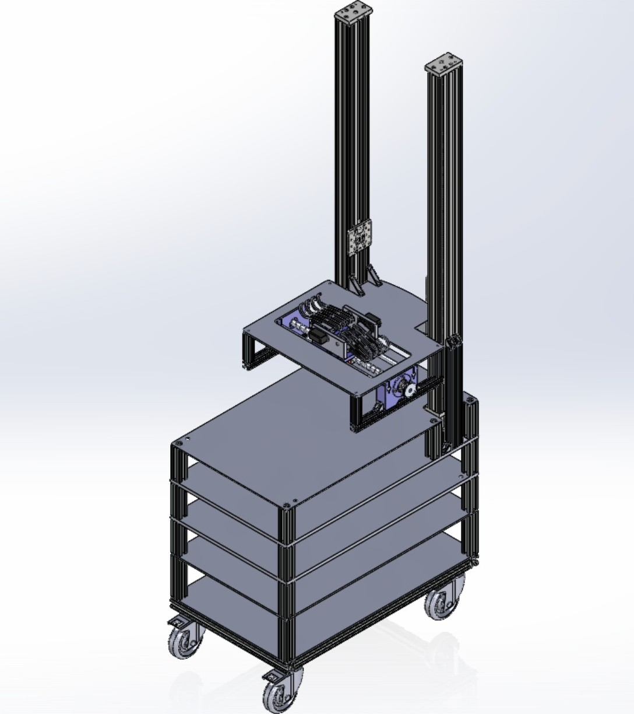

Highly motivated engineering student in Smart Materials Technology and Robotics & AI with a strong passion for automation and AI-driven solutions. Skilled in programming (Python, C, C++), control systems, and engineering design tools such as MATLAB and OpenCV. Hands-on experience in developing automated systems, predictive models, and smart materials applications. Aspiring to enhance my skills in Robotics and AI. Aim to gain real-world experience and knowledge beyond the university setting.
Uses AI + OCR to detect and sort package addresses and zip codes.
Automated and optimized package address sorting using Python libraries. Implemented object detection with OpenCV, OCR with Pytesseract, and data management with Pandas. System processed real-time video to identify package labels and extract address and zip code information for accurate sorting. Incorporated image preprocessing, dynamic adjustments, and automated sorting logic to enhance performance.
View on GitHubMachine Learning model predicting PV output from weather data.
Predictive models to enhance solar cell efficiency by integrating machine learning such as linear regression, logistic regression, KNN, SVM, decision trees, and gradient boosting. Analyzed the impact of meteorological data (temperature, wind speed, sunlight duration) on solar cell performance. Trained and validated models to forecast solar cell efficiency, for integrating them into solar power systems for real-time predication.
View on GitHubPLC/HMI-controlled pneumatic system
Automated Joining Station project (inspired by Festo Joining Station) simulating manufacturing workflows. The system utilized motors, sensors, and pneumatic actuators to perform joining tasks, controlled via a PLC and HMI framework, providing a comprehensive simulation of industrial processes.
MORE INFO!PCB Line-following robot with STM32 Nucleo
Project focused on creating a compact and lightweight robotic system by integrating all components, including sensors, microcontrollers, and motors onto PCB. Utilizing STM32 Nucleo for control, the design reduced size and weight compared to bulky robots.
 Gripper and launcher robot with Makeblock and CyberPi.
This manual robot designed to perform coordinated tasks (ball gripping and launching). The robot featured a gripper mechanism to pick up a ball from the floor and place it onto a projectile launcher. The launcher used nautilus gears for efficient energy transfer, enabling the ball to be launched into a goal. Movement and arm motion were controlled via a Makeblock Controller and CyberPi.
MORE INFO!Conceptual thesis project — an autonomous robot for OPD medicine picking and delivery (Still in progress)
YAMAN (Your Autonomous Medicine Assistant Nexus) is a thesis project aimed at supporting pharmacists in outpatient departments. Designed to reduce human error and repetitive workload, YAMAN can autonomously navigate, locate, verify, and retrieve medicines using AI-based vision, LiDAR mapping, and robotic arms. The medicine pickup process is guided by YOLO-based object detection and OCR label verification. Orders are received via a mocked hospital API, and the system initiates a smart search if the expected medicine location fails. The project is under active development and scheduled for completion in 2026 as part of a capstone research initiative. Current milestones include 3D design, hardware architecture planning, AI model training.
MORE INFO!Python, C, C++, JavaScript, HTML, CSS
PLC, HMI
MATLAB, Autodesk Inventor, Figma, MIT App Inventor
Model Training, OpenCV, Machine Learning
Thai (Native), English (IELTS 5.5)